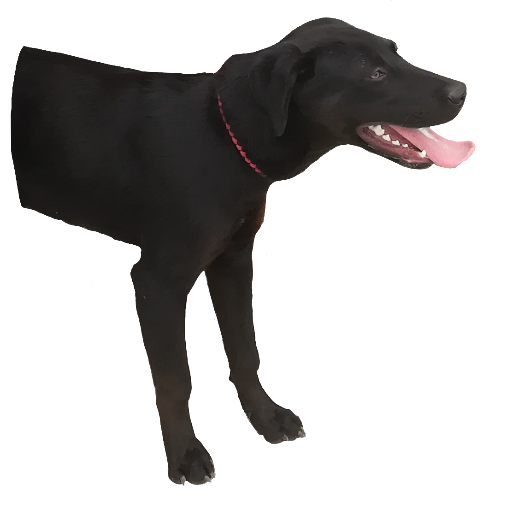
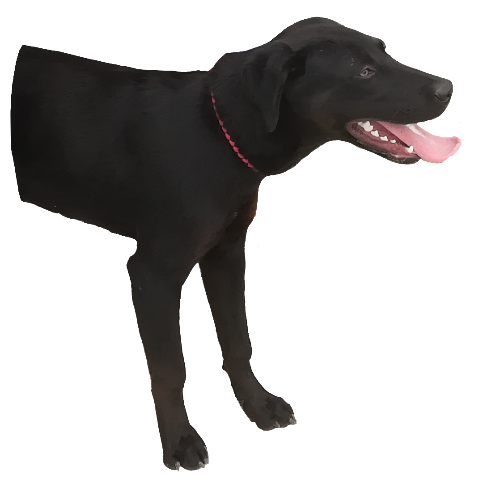

As one of us is a pet-owner currently living in Barangay Fort Del Pilar, there are some noticeable shortcomings given to our attention. Below are our suggestions to address the existing issues and enhance what is already there. With these suggestions we aim for a much better life for the animals and the citizens too. You can help by joining our mailing list so that we can send you updates on actions we are doing.
Animals are everywhere. There are dogs and cats which are stray or found in adoption centers. Accepting the practice of adopting will help these homeless dogs and cats find good homes. Since dog catchers have been in Barangay Fort Del Pilar, a once stray dog could be in an adoption center now. If you adopt a pet, the advocacy could be stronger.
A lot of citizens walk their pets any time of day, it would be great if there was a station to rest or let pets meet. Also, this station could have a place for animals to defecate or urinate therefore lessening the animal excretions found throughout the barangay. These animal stations may be far-fetched from now, but with some help it could be possible in no time.
There is a day for giving vaccinations to pets, but wouldn't it be awesome if there was a day for fun-filled activities for pets? Pets are usually only tied near the gate or situated inside the house. A handful of pets probably only see the daylight once in a while. A "Pet Day" project could add more fun to the life of pets. The pets could be in a fashion show or show some tricks. The thing here is for pets to be showcased then be allowed to play around the barangay without doing anything messy of course. It will be a day for pets and pet owners to do what both may enjoy.
 
